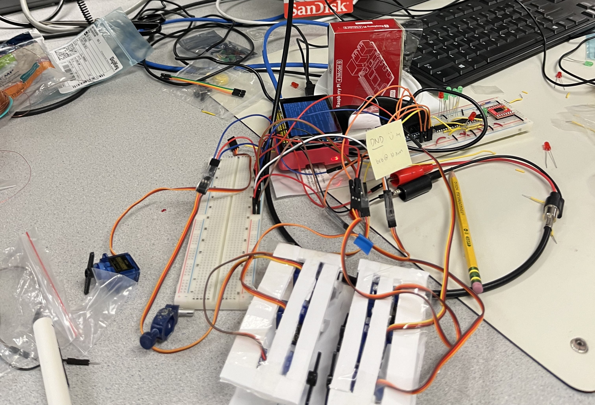
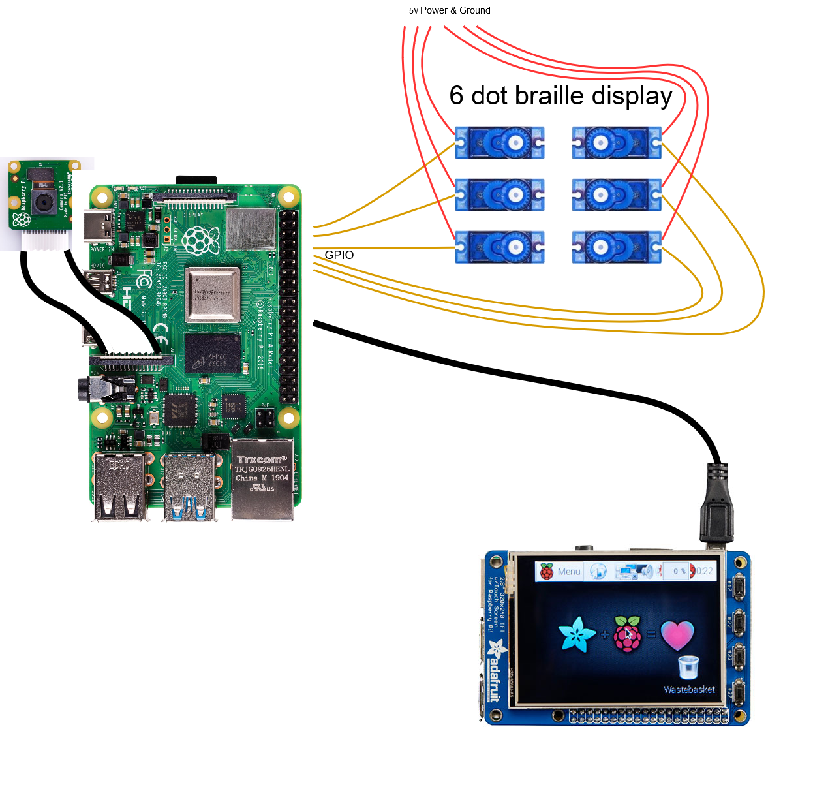
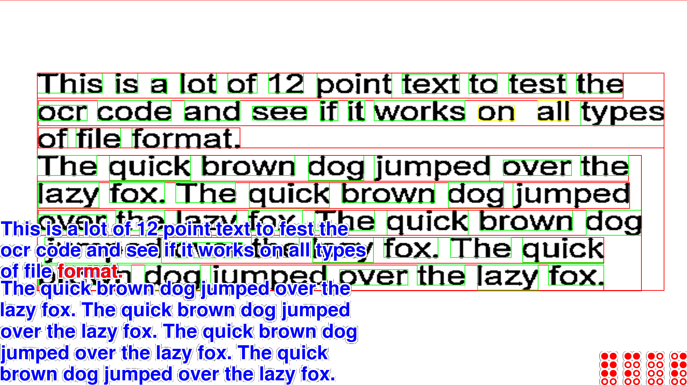

Back to projects!
Introduction
We created a working braille display combined with optical character recognition software that automatically translates text seen by the PiCamera into braille characters. It was achieved using a custom refreshable braille display that was programmed to display any braille character, as well as a camera that fed information to a raspberry pi. Onboard software performed the optical character recognition (OCR) and translated that information into controls for the braille display. The software supports any number of braille displays and will include controls to navigate the text on the screen.
Design
Hardware Design
Our hardware consists of the Raspberry Pi 4, Pi Camera Module 2, piTFT screen, and 6 SG90 servos. The camera and screen were connected to the raspberry pi via the connectors built into the raspberry pi. The PWM control signals of the servos were connected to the GPIO pins of the raspberry pi, and the power and ground ports were connected to a DC power supply.
Initially we planned to follow this open-source design for the braille display. The design used tiny electromagnets to actuate braille displays that were assembled from a number of 3d-printed parts. This design had the very small form factor necessary for a proper braille display, as readers expect a single character to be small enough to fit under a single fingertip. Unfortunately, we were unable to reach the 3d print quality necessary to retain all the details of these small parts, despite using resin printers as suggested in the design logs. As a result, we had to pivot to a simpler and larger system using SG90 servos to actuate the braille displays. Nevertheless, given more time and access to better printers it would be fairly simple to port the software to use these electromechanical displays rather than our prototype servos.
Software Design
Our software was written in Python and uses OpenCV and pytesseract to perform OCR on the camera feed. The software GUI is controlled by the pygame library, and the servos for the braille display are controlled using PWMs from the pigpio library.
When performing OCR, the software reads the camera feed using OpenCV and first performs some
preprocessing on
the image to improve the OCR accuracy. This is implemented in the process_image function,
and
consists of
This process converts an originally noisy image into a binary black and white image, making the text clearer and easier to read with OCR.

The software has two main modes: video mode for continuous video feedback used to position
text in
an image, and reading mode, which is used to navigate a single snapshot of text to perform
reading.
The image above demonstrates the softwawre in action. The software is processing a sample image of text,
and
displaying the read text to the screen ata the bottom left of the screen. Additionally, the software
displays
boxes around each of the words detected by OCR, colored by the confidence of the analysis of each word
(all a
confident green in this test image). Currently, the braille displays are displaying the word
format. in braille, which is shown in the bottom right of the screen. The software is
currently in
reading mode, and the current block of text is highlighted in red.
Video Mode
In video
mode, the software reads the camera feed continuously and performs the necessary openCV processing and
pytesseract OCR, displaying the text on the screen. In reading mode, the software reads the
camera
feed and waits for the user to take a snapshot of the text. The software continuously reads camera input
at a
user-defined interval (controlled by the --interval argument), by default waiting 0.1
seconds
between each frame. The software then processes the image and displays the image as well as the read
text to the
screen. This is performed in a loop until the user takes a snapshot of the text.
Reading Mode
In reading mode, the software saves the last read camera frame as well as the results of
processing
and the OCR text output. The software divides the text into blocks of n braille characters,
where
n is specified by the --displays argument. This division algorithm performs
some smart
text splitting, and splits words at word boundaries whenever possible, unless a single word is longer
than the
total number of connected braille displays. The software then displays the text on the screen, with the
current
block of text highlighted in red. The text is translated using the pybrl library, which
performs
english to braille translation with UK Grade 2 braille rules. We used grade 2 braille because it has a
number of
contractions that makes reading braille much faster. These chunks of braille text can be iterated over
by the user to read the entire text.
Controls and Arguments
The software has the following controls:
spacebar: Swap modes between reading and videoright arrow: Move to the next set of braille textleft arrow: Move to the previous set of braille textThe software also has the following global command line arguments:
--width: Width of the pygame window. Overridden if the software detects a piTFT display
(default 320)--height: Height of the pygame window. Overridden if the software detects a piTFT
display
(default 240)--displays: The number of braille displays to use (default 6)--confidence: The minimum confidence level for OCR text to be displayed (default 75)
--camera: Index of the camera (in /dev/video*) to use (default 0)
In addition, the software supports two modes: test and webcam.
test
mode, there are two extra arguments, --image and --output. The
--image
argument specifies the image to test the OCR on, and the --output argument specifies
the output
image to save the processed image to. This mode is used for testing the OCR and navigation software
on a
single image file.
webcam mode is the default mode, and contains all the features of the full
software,
including the OCR, navigation, and braille display controls. This mode is used for the final project
demonstration.Testing
There are a number of test scripts we used to test various parts of the system before integrating them
into the
final software. Firstly, the main software has test mode built in, which performs
processing and
OCR on an image file of the user's choice. This mode is useful for testing the OCR and navigation
software on
the same image file repeatedly, allowing us to tweak parameters and processing steps to improve
accuracy, as
well as debug the navigation and word-splitting algorithms. Additionally, we had a separate python
script used
to test the servo control for all 6 of the servos representing each braille dot. This is a simple script
that
actuates each of the servos in turn, as well as including modes for all high and all low commands. This
script
was used to test the servo control and ensure that the servos were connected correctly and working as
expected.
Result
At the end of the project, we successfully created one prototype working braille display as well as the software necessary to perform OCR and navigate text. This software can be easily expanded to support any number of braille displays and even different display interfaces. This is important because our current display is just a prototype and proof of concept, so eventually we would want to use the smaller 3d printed displays mentioned in the hardware section. In its current state, the project demonstrates the feasibility of low-cost DIY braille display technology and the potential for OCR to be used in conjunction with these displays to create a low-cost accessible method for reading text for the visually impaired.
References
Hackaday Braille Display ProjectCode Appendix
#!/usr/bin/env python3
import pytesseract
import pygame.freetype
from PIL import Image
import argparse
import cv2
import time
import os
import pygame
import pandas as pd
import numpy as np
import pybrl
import re
import multiprocessing
def render_line_with_outline(
text: str, font: pygame.freetype.Font, border_width: int, color: tuple[int,
int, int], outline_color: tuple[int, int, int],
highlight_color: tuple[int, int, int], highlight_idx: tuple[int, int]
) -> pygame.Surface:
text_surface, text_surface_rect = font.render(text, outline_color)
outline_surface = pygame.Surface((text_surface_rect.w + 2 * border_width,
text_surface_rect.h + 2 * border_width))
for ox in range(-border_width, border_width + 1, border_width):
for oy in range(-border_width, border_width + 1, border_width):
if ox != 0 or oy != 0:
outline_surface.blit(text_surface, (border_width + ox,
border_width + oy))
text_surface, _ = font.render(text, color)
# If we need to highlight a section of the text, figure out the start x position
if highlight_idx is not None:
hs, he = highlight_idx
highlight_text = text[hs:he]
metrics = font.get_metrics(text)
# Position to draw would be
# Min x of the last letter + horizontal advancements of previous letters
pre_text_w = sum(m[4] for m in metrics[:hs]) + metrics[hs][0]
height = font.get_rect(text).y - font.get_rect(highlight_text).y
# Blit the highlighted text onto the text surface
font.render_to(text_surface, (pre_text_w, height), highlight_text,
highlight_color)
outline_surface.blit(text_surface, (border_width, border_width))
outline_surface.set_colorkey((0, 0, 0))
return outline_surface
def render_lines_with_outline(
lines: list[str], font: pygame.freetype.Font, border_width: int,
color: tuple[int, int, int], outline_color: tuple[int, int, int],
highlight_color: tuple[int, int, int] = (255,0,0),
highlight_idx: tuple[int, int] = None
) -> pygame.Surface:
surfaces = []
total_chars = 0
for i, line in enumerate(lines):
hidx = None
if highlight_idx is not None:
hs, he = highlight_idx
hidx = (hs - total_chars, he - total_chars)
if hidx[0] < 0:
hidx = (0, hidx[1])
if hidx[1] > len(line):
hidx = (hidx[0], len(line))
if hidx[1] < 0 or hidx[0] > len(line):
hidx = None
surfaces.append(render_line_with_outline(line, font, border_width,
color, outline_color, highlight_color, hidx))
total_chars += len(line) + 1 # Add 1 for the newline character
w = max(surf.get_size()[0] for surf in surfaces)
h = sum(surf.get_size()[1] for surf in surfaces)
output_surf = pygame.Surface((w, h))
cur_h = 0
for surf in surfaces:
output_surf.blit(surf, (0, cur_h))
cur_h += surf.get_size()[1]
output_surf.set_colorkey((0, 0, 0))
return output_surf
class BoundingBox:
def __init__(self,
x: int,
y: int,
w: int,
h: int,
confidence: int,
):
self.x = x
self.y = y
self.w = w
self.h = h
self.confidence = confidence
def rescale(self, old_dims: tuple[int, int], new_dims: tuple[int, int]):
self.x = int((self.x / old_dims[0]) * new_dims[0])
self.y = int((self.y / old_dims[1]) * new_dims[1])
self.w = int((self.w / old_dims[0]) * new_dims[0])
self.h = int((self.h / old_dims[1]) * new_dims[1])
def __eq__(self, other):
if not isinstance(other, BoundingBox):
return False
return self.x == other.x and self.y == other.y and self.w == other.w and
self.h == other.h and self.confidence == other.confidence
def __hash__(self):
return hash((self.x, self.y, self.w, self.h, self.confidence))
# Get the text and bounding boxes from the pytesseract data
def parse_tesseract_data(data: pd.DataFrame, confidence_filter: 90) ->
tuple[str, list[BoundingBox]]:
par = 0
line = 0
word = 0
text = []
boxes = []
current_line = "\t"
for _, row in data.iterrows():
boxes.append(BoundingBox(row["left"], row["top"], row["width"],
row["height"], row["conf"]))
if row["par_num"] != par:
par = row["par_num"]
assert row["line_num"] == 0
assert row["word_num"] == 0
line = 0
word = 0
text.append(current_line)
current_line = "\t"
elif row["line_num"] != line:
line = row["line_num"]
assert row["word_num"] == 0
word = 0
text.append(current_line)
current_line = ""
elif row["word_num"] != word:
word = row["word_num"]
current_line += " "
if row["conf"] > confidence_filter:
current_line += row["text"]
elif row["conf"] > 0:
current_line += "?"
text.append(current_line)
# Remove lines that are all whitespace
text = [line for line in text if line.strip()]
boxes = list(set(boxes))
return ("\n".join(text), boxes)
def process_image(frame: cv2.typing.MatLike, confidence_min: int) ->
tuple[cv2.typing.MatLike, str, list[BoundingBox]]:
frame = cv2.cvtColor(frame, cv2.COLOR_BGR2GRAY)
# Blur the image to reduce noise
frame = cv2.GaussianBlur(frame, (5, 5), 0)
# Denoise using adaptive thresholding
frame = cv2.adaptiveThreshold(frame, 255, cv2.ADAPTIVE_THRESH_GAUSSIAN_C,
cv2.THRESH_BINARY, 11, 2)
# Convert to pillow image
img = Image.fromarray(frame)
# OCR
df = pytesseract.image_to_data(img, output_type=pytesseract.Output.DATAFRAME)
return (frame, *parse_tesseract_data(df, confidence_min))
def render_image(screen: pygame.Surface, frame: cv2.typing.MatLike,
confidence_min: int, process: bool = True) -> str:
(frame, text, boxes) = process_image(frame, confidence_min)
imgh,imgw = frame.shape
# Resize the image to the right dimensons
frame = cv2.resize(frame, screen.get_size())
frame = cv2.cvtColor(frame, cv2.COLOR_GRAY2RGB)
# Draw to pygame window
# Scale image to fit screen
buf = pygame.image.frombuffer(frame.tobytes(), frame.shape[1::-1], "RGB")
screen.blit(buf, (0, 0))
# Resize all the boxes and draw them to the screen
for box in boxes:
box.rescale((imgw, imgh), dims)
x, y, w, h = box.x, box.y, box.w, box.h
if box.confidence > 90:
color = (0, 255, 0)
elif box.confidence > 75:
color = (255, 255, 0)
elif box.confidence > 50:
color = (255, 128, 0)
else:
color = (255, 0, 0)
pygame.draw.rect(screen, color, (x, y, w, h), 2)
text = text.split("\n")
text = [l.strip() for l in text]
return "\n".join(text)
def render_text(screen: pygame.Surface, text: str, highlight_idx: tuple[int, int]):
lines = text.split("\n")
# Draw the text
font = pygame.freetype.Font(None, max(10, int(screen.get_size()[1] / 20)))
text_surface = render_lines_with_outline(lines, font, 4, (0, 0, 255),
(255, 255, 255), (255, 0, 0), highlight_idx)
screen.blit(text_surface, (0, args.height - text_surface.get_size()[1]))
class Camera:
def __init__(self, camera: int, rpi: bool):
self.rpi = rpi
if self.rpi:
import picamera2
self.cap = picamera2.Picamera2(camera)
self.cap.configure(self.cap.create_preview_configuration(main={
"format": 'XRGB8888', "size": (640, 480)}))
self.cap.start()
else:
self.cap = cv2.VideoCapture(camera)
assert self.cap.isOpened(), "Camera not found"
self.cap.set(cv2.CAP_PROP_FPS, 30)
self.cap.set(cv2.CAP_PROP_FOURCC,cv2.VideoWriter_fourcc('M','J','P','G'))
print("Supported Width: ", self.cap.get(cv2.CAP_PROP_FRAME_WIDTH))
print("Supported Height: ", self.cap.get(cv2.CAP_PROP_FRAME_HEIGHT))
print("Supported FPS: ", self.cap.get(cv2.CAP_PROP_FPS))
print("FourCC Codec: ", self.cap.get(cv2.CAP_PROP_FOURCC))
def read(self):
if self.rpi:
return True, self.cap.capture_array()
else:
return self.cap.read()
def release(self):
if self.rpi:
self.cap.stop()
else:
self.cap.release()
def webcam_render(camera: Camera, screen: pygame.Surface, confidence_min: int) -> str:
dims = screen.get_rect()
dims = (dims.w, dims.h)
ret, frame = camera.read()
if not ret:
return None
return render_image(screen, frame, confidence_min)
class ShiftDisplay:
def __init__(self, pi):
self.pi = pi
self.gpios = [[21, 19, 26, 5, 20, 13]]
self.bounds = (1000, 1900)
self.delay = 0.5
self.process = None
self.done = multiprocessing.Value("i", 0)
def display_subprocess(pi, gpios: list[list[int]], braille: list[str],
bounds: tuple[int, int], delay: int, done: multiprocessing.Value):
braille = (len(gpios) - 1) * ["000000"] + braille + (len(gpios) - 1) * ["000000"]
print("Started subprocess")
chari = 0
while done.value == 0:
for j in range(len(gpios)):
char = braille[chari + j]
for i in range(6):
if char[i] == "1":
pi.set_servo_pulsewidth(gpios[j][i], bounds[1])
elif char[i] == "0":
pi.set_servo_pulsewidth(gpios[j][i], bounds[0])
time.sleep(delay)
chari = (chari + 1) % len(braille)
time.sleep(delay)
def display(self, braille: str):
braille = [braille[i:i+6] for i in range(0, len(braille), 6)]
if self.process is not None:
# Terminate the process
print("Terminating")
self.done.value = 1
self.process.join()
self.done.value = 0
self.process = multiprocessing.Process(target=ShiftDisplay.display_subprocess,
args=(self.pi, self.gpios, braille, self.bounds, self.delay, self.done))
self.process.start()
def reset(self):
if self.process is not None:
# Terminate the process
self.done.value = 1
self.process.join()
for j in range(len(self.gpios)):
for i in range(6):
self.pi.set_servo_pulsewidth(self.gpios[j][i], self.bounds[0])
time.sleep(1)
def braille_to_unicode(braille: str) -> str:
# Break the string into groups of 6 characters
braille = [braille[i:i+6] for i in range(0, len(braille), 6)]
# Reverse each string and convert to binary number to get the unicode value
return "".join(chr(int(b[::-1], 2) + 0x2800) for b in braille)
# Manages text reneering
# Corresponds to a set of text lines with N
class TextManager:
def __init__(self, text: str, width: int):
self.text = text
# Break the text into item sets of line and position indices
# There is a maximum of `width` characters per item
print([("000000".join(["".join(i) for i in pybrl.translate(m.group(0))]),
m.group(0), (m.start(), m.end())) for m in re.finditer(r'\S+', text)])
words = [("000000".join(["".join(i) for i in pybrl.translate(m.group(0))]),
(m.start(), m.end())) for m in re.finditer(r'\S+', text)]
width = width * 6
# Greedily pair up and split up matches into groups of around `width` characters
self.items = []
if len(words) > 0:
cur_item = None
for i in range(0, len(words)):
word, idx = words[i]
print(f"Word {word} at {idx}")
if len(word) > width:
print("Breaking up")
if cur_item is not None:
self.items.append(cur_item)
while len(word) > width:
print(f"Splitting word {word}")
self.items.append((word[:width], idx))
word = word[width:]
self.items.append((word, idx))
cur_item = None
elif cur_item is not None:
print("Trying concat")
new_word = cur_item[0] + "000000" + word
if len(new_word) > width:
self.items.append(cur_item)
cur_item = (word, idx)
else:
cur_item = (new_word, (cur_item[1][0], idx[1]))
else:
cur_item = (word, idx)
if cur_item is not None:
self.items.append(cur_item)
self.items = [(word, pos) for word, pos in self.items]
else:
self.items = []
self.idx = 0
@property
def braille(self):
if not self.items:
return "000000"
return self.items[self.idx][0]
def render(self, screen: pygame.Surface):
if self.items:
# Render the current item
render_text(screen, self.text, self.items[self.idx][1])
# Draw the currently displaying braille to the bottom right
braille = braille_to_unicode(self.braille)
print (f"Converted {self.braille} to {braille}")
font = pygame.freetype.Font("FreeMono.ttf", max(12, int(screen.get_size()[1] / 10)))
surf = render_line_with_outline(braille, font, 4, (255, 0, 0), (255, 255, 255), (255, 0, 0), None)
screen.blit(surf, (screen.get_size()[0] - surf.get_size()[0], screen.get_size()[1] - surf.get_size()[1]))
def next(self):
self.idx = (self.idx + 1) % len(self.items)
def prev(self):
self.idx = (self.idx - 1) % len(self.items)
def draw(screen: pygame.Surface, image: pygame.Surface, text_manager: TextManager, disp = None):
# Draws the image and text to the screen
screen.fill((0, 0, 0))
screen.blit(image, (0, 0))
text_manager.render(screen)
pygame.display.flip()
if disp is not None and disp[0] is not None and disp[1] is not None:
disp[0].update()
print(text_manager.braille)
disp[1].display(text_manager.braille)
if __name__ == "__main__":
# Handle command line arguments
args = argparse.ArgumentParser()
args.add_argument("--width", type=int, default=320, help="Width of the window")
args.add_argument("--height", type=int, default=240, help="Height of the window")
args.add_argument("--camera", type=int, default=0, help="Camera index")
args.add_argument("--confidence", type=int, default=75, help="Minimum confidence for OCR")
args.add_argument("--displays", type=int, default=6, help="Number of braile displays connected")
subparsers = args.add_subparsers(dest="command", help="sub-command help")
test_parser = subparsers.add_parser("test", help="test help")
test_parser.add_argument("--image", type=str, required=True, help="Image path")
test_parser.add_argument("--output", type=str, help="Output path")
webcam_parser = subparsers.add_parser("webcam", help="webcam help")
webcam_parser.add_argument("--interval", type=float, default=0.1, help="Number
of seconds between capturing images")
args = args.parse_args()
root = os.path.dirname(os.path.abspath(__file__))
pitft = None
is_RPI = False
shift_display = None
try:
# Detect if we are running on a Raspberry Pi and import the necessary libraries
import RPi.GPIO as GPIO
import pigame
import pigpio
is_RPI = True
GPIO.setmode(GPIO.BCM)
# Set up the 4 pitft buttons
GPIO.setup(17, GPIO.IN, pull_up_down=GPIO.PUD_UP)
GPIO.setup(22, GPIO.IN, pull_up_down=GPIO.PUD_UP)
GPIO.setup(23, GPIO.IN, pull_up_down=GPIO.PUD_UP)
GPIO.setup(27, GPIO.IN, pull_up_down=GPIO.PUD_UP)
os.putenv('SDL_VIDEODRV','fbcon')
os.putenv('SDL_FBDEV', '/dev/fb1')
os.putenv('SDL_MOUSEDRV','dummy')
os.putenv('SDL_MOUSEDEV','/dev/null')
os.putenv('DISPLAY','')
# Set to pitft screen resolution
args.width = 320
args.height = 240
pitft = pigame.PiTft()
shift_display = ShiftDisplay(pigpio.pi())
except ImportError:
pass
# Implement webcam logic
camera = Camera(args.camera, is_RPI)
# Create a pygame window
pygame.init()
# Use pitft screen resolution
dims = (args.width, args.height)
pygame.display.set_mode(dims)
if args.command == "test":
print(f"Reading image from {args.image}")
# Read the image
image = Image.open(args.image).convert("RGB")
image = np.array(image)
# Create an image surface the same size as the window
image_surf = pygame.Surface(dims)
# Process the image
text = render_image(image_surf, image, args.confidence)
tm = TextManager(text, args.displays)
tm.render(pygame.display.get_surface())
draw(pygame.display.get_surface(), image_surf, tm, (pitft, shift_display))
if is_RPI:
# If we are on a Raspberry Pi, set up GPIO callbacks
print("Setting up GPIO")
# Set up GPIO callbacks
def quit(x):
global running
running = False
def next(x):
global tm
tm.next()
draw(pygame.display.get_surface(), image_surf, tm, (pitft, shift_display))
def prev(x):
global tm
tm.prev()
draw(pygame.display.get_surface(), image_surf, tm, (pitft, shift_display))
GPIO.add_event_detect(23, GPIO.FALLING, callback=prev, bouncetime=200)
GPIO.add_event_detect(17, GPIO.FALLING, callback=next, bouncetime=200)
GPIO.add_event_detect(27, GPIO.FALLING, callback=quit, bouncetime=200)
running = True
while running:
# Check right and left arrow keys
for event in pygame.event.get():
if event.type == pygame.KEYDOWN:
if event.key == pygame.K_RIGHT:
# Move to the next item
tm.next()
draw(pygame.display.get_surface(), image_surf, tm, (pitft, shift_display))
elif event.key == pygame.K_LEFT:
# Move to the previous item
tm.prev()
draw(pygame.display.get_surface(), image_surf, tm, (pitft, shift_display))
if event.type == pygame.QUIT:
running = False
break
elif args.command == "webcam":
running = True
mode = "video"
image_surf = pygame.Surface(dims)
text = webcam_render(camera, image_surf, args.confidence)
if text is None:
print("Camera disconnected")
running = False
tm = TextManager(text, args.displays)
tm.render(pygame.display.get_surface())
last_timestamp = time.time()
if is_RPI:
# If we are on a Raspberry Pi, set up GPIO callbacks
print("Setting up GPIO")
# Set up GPIO callbacks
def quit(x):
global running
running = False
def next(x):
global tm
if mode == "snap":
tm.next()
draw(pygame.display.get_surface(), image_surf, tm, (pitft, shift_display))
def prev(x):
global tm
if mode == "snap":
tm.prev()
draw(pygame.display.get_surface(), image_surf, tm, (pitft, shift_display))
def space(x):
global mode
print("Space")
if mode == "video":
mode = "snap"
draw(pygame.display.get_surface(), image_surf, tm, (pitft, shift_display))
else:
if is_RPI:
shift_display.reset()
mode = "video"
GPIO.add_event_detect(22, GPIO.FALLING, callback=space, bouncetime=200)
GPIO.add_event_detect(23, GPIO.FALLING, callback=prev, bouncetime=200)
GPIO.add_event_detect(17, GPIO.FALLING, callback=next, bouncetime=200)
GPIO.add_event_detect(27, GPIO.FALLING, callback=quit, bouncetime=200)
while running:
events = pygame.event.get();
if mode == "video":
if time.time() - last_timestamp > args.interval:
# Keep taking photos every interval seconds
text = webcam_render(camera, image_surf, args.confidence)
if text is None:
print("Camera disconnected")
running = False
else:
# Update the text manager
tm = TextManager(text, args.displays)
tm.render(pygame.display.get_surface())
draw(pygame.display.get_surface(), image_surf, tm, None)
last_timestamp = time.time()
for event in events:
if event.type == pygame.KEYDOWN:
if event.key == pygame.K_SPACE:
# Switch to snap mode
mode = "snap"
draw(pygame.display.get_surface(), image_surf, tm, (pitft, shift_display))
break
elif mode == "snap":
for event in events:
if event.type == pygame.KEYDOWN:
if event.key == pygame.K_SPACE:
# Switch to video mode
if is_RPI:
shift_display.reset()
mode = "video"
break
if event.key == pygame.K_LEFT:
# Move to the previous item
tm.prev()
draw(pygame.display.get_surface(), image_surf, tm, (pitft, shift_display))
elif event.key == pygame.K_RIGHT:
# Move to the next item
tm.next()
draw(pygame.display.get_surface(), image_surf, tm, (pitft, shift_display))
for event in events:
if event.type == pygame.QUIT:
running = False
break
# Clean up
if is_RPI:
shift_display.reset()
GPIO.cleanup()
del(pitft)
pygame.quit()
camera.release()